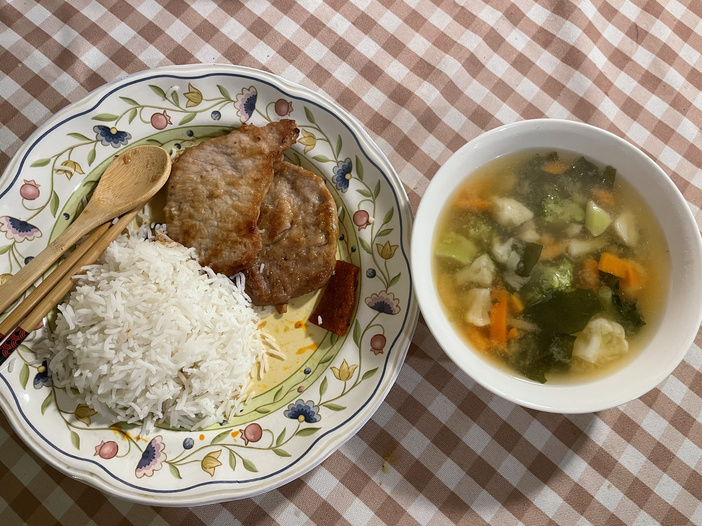

Marinate some pork chops and store in the fridge. They will be ready when you want to cook. Frozen veggies and instant miso soup packs are your best friends to make this heart-warming and easy-to-make soup.
Ingredients:
Pork Chops (seasoning: soysauce, sugar, cornstarch, cooking oil), Rice, Frozen Mixed Veggies, Instant Miso Soup Pack
Guide: